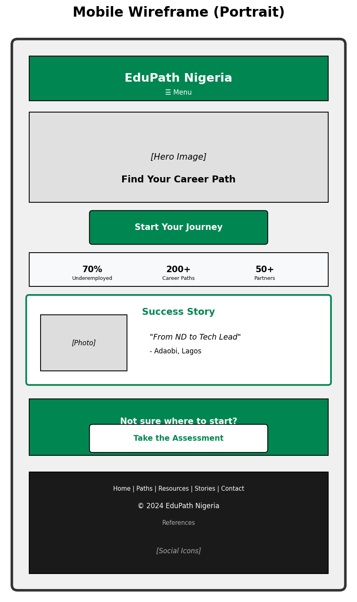
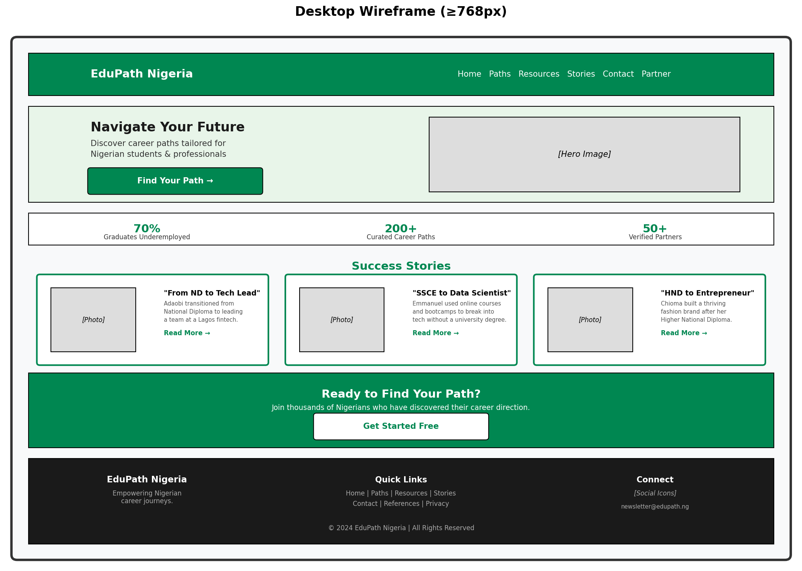

1. Site Name & Purpose
Site Name: EduPath Nigeria
Site Purpose: EduPath Nigeria is an interactive web platform designed to help Nigerian students and young professionals navigate their education-to-career journey. The site provides personalized career pathway recommendations based on a user's current education level, interests, and location — connecting them with verified training resources, certification requirements, and real success stories from people who have walked similar paths.
2. Target Audience
Primary Users
- Secondary school graduates (SSCE) — Ages 16-20, deciding between university, polytechnic, or vocational training
- Current undergraduates — Ages 18-25, seeking clarity on career options related to their course of study
- Recent graduates (ND, HND, BSc) — Ages 21-28, struggling with unemployment or underemployment
- Career changers — Ages 25-35, looking to transition into tech, trades, or entrepreneurship
Secondary Users
- Parents and guardians — Seeking guidance to support their children's education decisions
- Secondary school counselors — Looking for resources to advise students
- Training institutions — Potential partners wanting to list their programs
Scenarios
- A 19-year-old in Ibadan with SSCE results wants to know if he should study Computer Science at UI or attend a coding bootcamp.
- A 24-year-old HND graduate in Lagos is tired of retail jobs and wants to pivot into digital marketing.
- A parent in Abuja wants to find verified vocational training centers for her daughter interested in fashion design.
- A final-year Economics student at University of Jos wants to know what certifications will improve her job prospects in banking.
3. Site Structure & Pages
| Page | File Name | Purpose | Key Features |
|---|---|---|---|
| Home | index.html | Introduction and engagement | Hero stats, featured success stories, CTA to Path Finder |
| Path Finder | paths.html | Interactive career recommendation tool | Multi-step form, dynamic results, bookmark to localStorage |
| Resources | resources.html | Directory of training opportunities | Filterable cards, category tabs, lazy-loaded images |
| Success Stories | stories.html | Inspirational real-life journeys | Testimonial grid, modal detail view, video placeholders |
| Partner With Us | contact.html | Institution partnership and contact | Validated HTML form, newsletter signup, FAQ accordion |
| References | references.html | Citations and attributions | Plain text list, linked from footer |
4. Design & Style Guide
Color Scheme
Colors inspired by Nigeria's national identity — green for growth and hope, with clean neutrals for readability.
#008751
#FFFFFF
#1A1A1A
#F8F9FA
- Primary (#008751): Headers, buttons, links, active states — represents growth and Nigerian identity
- Secondary (#FFFFFF): Card backgrounds, text on dark backgrounds, clean space
- Accent (#1A1A1A): Body text, headings on light backgrounds, borders
- Background (#F8F9FA): Page background, subtle contrast for content areas
Typography
- Headings: Roboto (700) — Clean, modern, highly readable
- Body: Open Sans (400, 600) — Friendly, accessible, excellent for long-form content
- Base size: 16px (1rem) with 1.6 line-height
Spacing & Layout
- Max content width: 1200px centered
- Card padding: 1.5rem
- Section margins: 2rem vertical
- Grid gap: 1.5rem
- Mobile padding: 1rem
5. Wireframes
Mobile View (Portrait)

Desktop View (≥768px)

6. JavaScript Functionality Plan
| Feature | Page | JS Implementation |
|---|---|---|
| Path Recommendation Engine | paths.html | Array of career path objects; filter by education, interest, location; output via template literals |
| Bookmark Paths | paths.html | localStorage to save favorite paths; toggle button state; display saved list |
| Resource Filtering | resources.html | Category buttons trigger filter function; .forEach() to rebuild card grid |
| Form Validation | contact.html | Conditional branching for required fields; regex for email; show/hide error messages |
| Newsletter Signup | contact.html | Save email to localStorage; show confirmation; prevent duplicates |
| Story Modal | stories.html | Click opens modal with full story; DOM element selection and class toggling |
| FAQ Accordion | contact.html | Click question expands answer; event listeners; conditional display |
| Lazy Loading | resources.html, stories.html | Intersection Observer API for images; progressive enhancement |
| Dynamic Footer Year | All pages | Date object; update copyright year automatically |
7. Content Strategy
Images Needed
- Hero image: Nigerian university campus or diverse professionals (WebP, optimized)
- Success story portraits: 6-8 Nigerian professionals (WebP, square crop)
- Resource logos: Training institution logos (SVG or WebP)
- Category icons: Tech, Business, Healthcare, Agriculture, Creative, Trades (SVG)
- Background textures: Subtle Nigerian-inspired patterns (CSS or small WebP)
Text Content Sources
- Nigerian Bureau of Statistics — employment and education data
- NUC (National Universities Commission) — accredited courses
- ITF (Industrial Training Fund) — vocational training info
- Real interviews with Nigerian professionals for success stories
- Personal knowledge from education sector experience
8. Monetization & Post-Course Plan
- Phase 1 (Launch): Free platform, build user base, collect testimonials
- Phase 2: Premium personalized counseling subscriptions (₦2,000/month)
- Phase 3: B2B licensing to secondary schools and universities
- Phase 4: Affiliate commission from partner training institutions (10-15% per enrollment)
- Phase 5: Job board integration — employers pay to post opportunities to qualified users